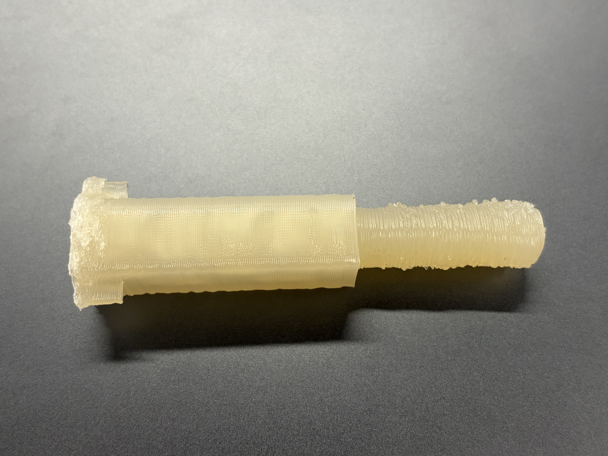
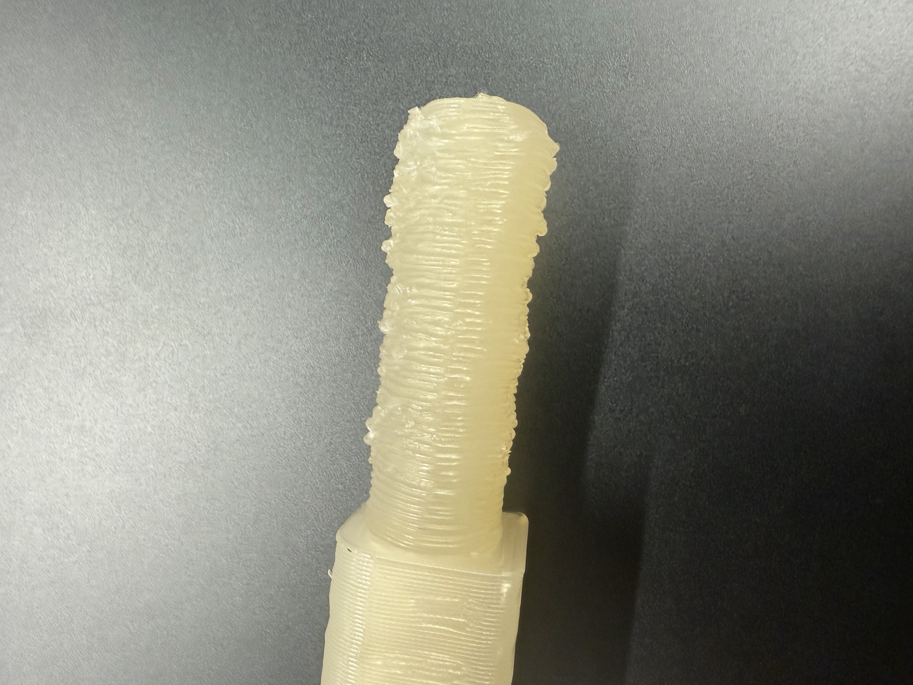
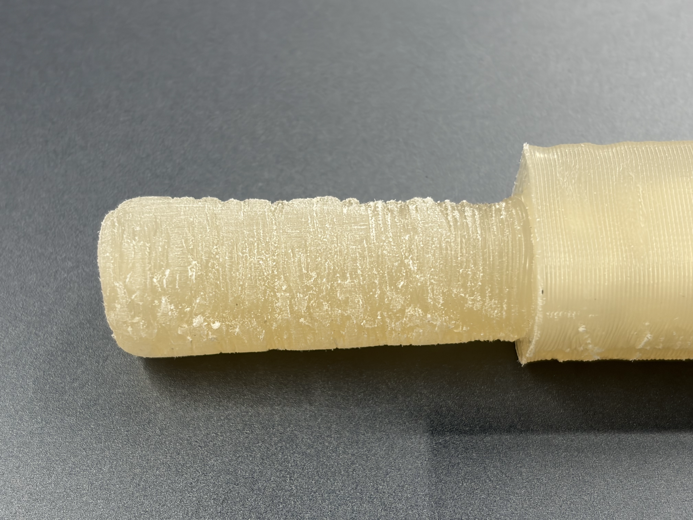
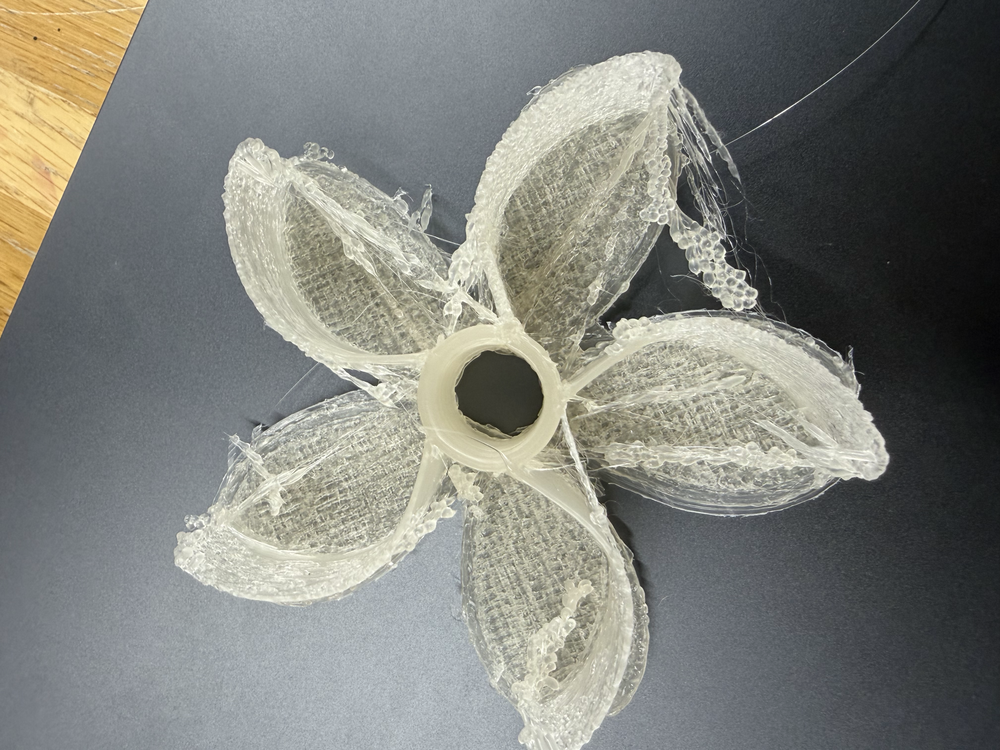
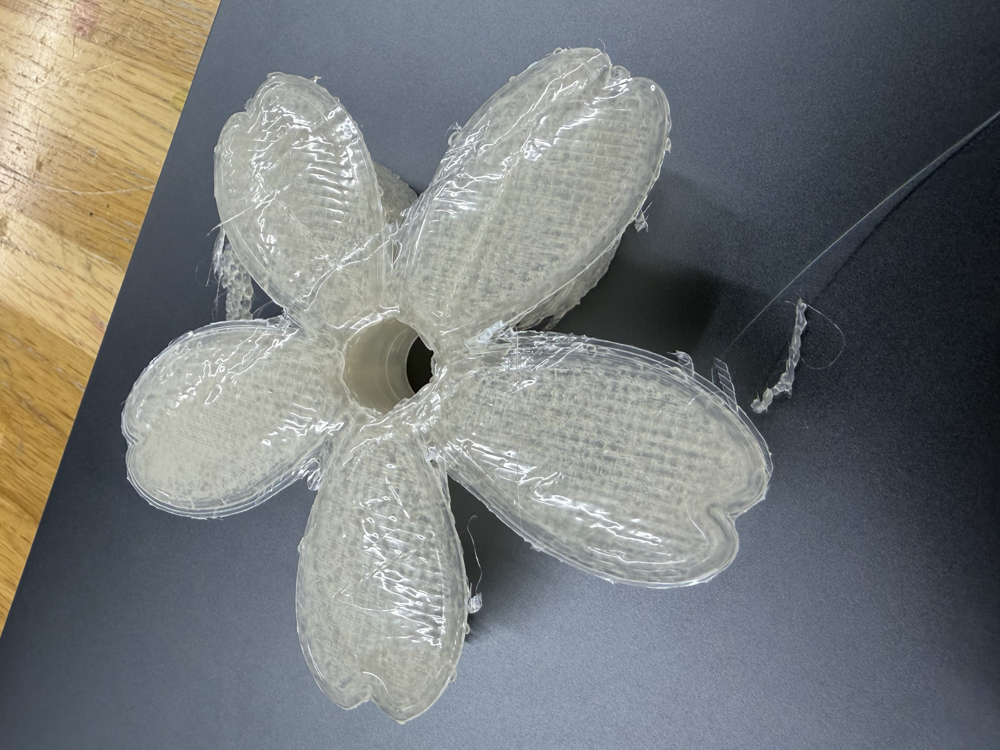

作品の制作 第３章
第２章まででPLAを用いた試作品を形にすることができたので、ペレット式3Dプリンターでの制作に移っていきます。
ラボのスタッフさんや先生のご尽力によりペレット式が無事復活しました。本当にありがとうございます。
① 花弁の回転軸
まずはじめに、花弁の回転軸パーツからプリントしていきます。
こちらはテストもかねて、PLAでの試作品から設計の調整等は行わずそのままプリントすることにしました。
無事にプリント完了！全長10cmほどのサイズで2時間30分ほどの時間を要しました。先端の丸い部分がでこぼこした形 になってしまいました。
ケバブ屋さんのお肉みたいになってしまいました...。ここで問題点が２つ生じます。
ひとつ、先端にかけて太さが出る形になってしまい、PLAで試作した花弁パーツの穴に入らない こと。
ふたつ、でこぼこすぎて回転軸として機能しない可能性がある こと。（穴に通せないのであくまで仮説）
そこで、この問題点を克服するために２つの作業を行いました。
まず、花弁パーツの設計データを修正し、太めの軸でも通せるよう穴の直径を3mm拡張 しました。
そして、これまでのペレット式での試作品でも行ったように、軸パーツの先端をやすりがけで滑らかに しました。
② 花弁
続いて、回転する花弁のパーツをプリントしていきます。
前述の通り、中央の穴のサイズをやや拡張させる変更を行ってからのプリントとなります。
こちらも大きく形状が崩れることなくプリント完了。およそ３時間ほどかかりました。
しかしながら、細部の造形は粗さが目立ち、特に風を受ける部分はビーズのような質感に...
また、回転軸を差し込む穴の部分も少しゆがんでしまいました。
ラボのスタッフさんや先生のご尽力によりペレット式が無事復活しました。
まずはじめに、花弁の回転軸パーツからプリントしていきます。
こちらはテストもかねて、PLAでの試作品から設計の調整等は行わずそのままプリントすることにしました。

無事にプリント完了！全長10cmほどのサイズで2時間30分ほどの時間を要しました。

ケバブ屋さんのお肉みたいになってしまいました...。ここで問題点が２つ生じます。
ひとつ、先端にかけて太さが出る形になってしまい、
ふたつ、でこぼこすぎて
そこで、この問題点を克服するために２つの作業を行いました。
まず、花弁パーツの設計データを修正し、太めの軸でも通せるよう
そして、これまでのペレット式での試作品でも行ったように、

続いて、回転する花弁のパーツをプリントしていきます。
前述の通り、中央の穴のサイズをやや拡張させる変更を行ってからのプリントとなります。


こちらも大きく形状が崩れることなくプリント完了。およそ３時間ほどかかりました。
しかしながら、細部の造形は粗さが目立ち、特に風を受ける部分はビーズのような質感に...
また、回転軸を差し込む穴の部分も少しゆがんでしまいました。